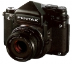
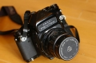

器材库 > 120中幅相机 > 67

规格总览
产品类型
6×7片幅单反相机，可更换镜头、取景器及对焦屏
发布日期
未知
标称画幅
6 × 7cm
实际画幅
55 × 70mm
停产
是
取景规格
取景范围
90%
取景放大倍率
1.0倍
对焦屏
标准为微棱磨砂对焦屏，另有四种互换式对焦屏
反光镜锁定
有
镜头和对焦
镜头卡口
P67
镜头卡口类型
双重插刀式卡口（内外插刀环用于不同镜头系列）
曝光控制
测光系统
TTL镜后测光，内置2枚SPD矽光敏体
测光范围
2.5EV~19EV
ISO感光度
12-3200
快门
电子控制双重帘幕焦平快门
快门速度
B, 1 - 1/1000秒
闪光同步速度
X快门：1 - 1/30秒；叶片快门：1 - 1/500
其它规格
接口
闪光同步插孔
电池
6V碱性电池或氧化银电池
机身尺寸
177×150×91mm
机身重量
1810g
ytlu2015-02-13 10:344.83 分
操作性 4.50功能性 4.50美观性 5.00趣味性 5.00耐用性 5.00性价比 5.00
柔软的机器2014-01-24 01:214.83 分
操作性 5.00功能性 4.50美观性 4.50趣味性 5.00耐用性 5.00性价比 5.00
polluxchi2012-08-30 13:064.33 分
操作性 4.00功能性 4.00美观性 3.00趣味性 5.00耐用性 5.00性价比 5.00
Q阳羊2012-02-08 17:404.58 分
操作性 4.00功能性 4.50美观性 4.50趣味性 4.50耐用性 5.00性价比 5.00
lllkkk4202011-12-21 21:224.42 分
操作性 4.50功能性 4.00美观性 4.00趣味性 4.50耐用性 5.00性价比 4.50
huijiangbo2011-06-15 09:484.75 分
操作性 5.00功能性 5.00美观性 4.00趣味性 4.50耐用性 5.00性价比 5.00
国仁2006-01-24 23:124 分
操作性 4.50功能性 4.50美观性 3.00趣味性 3.00耐用性 4.50性价比 4.50
黑白印相2005-01-12 17:024.42 分
操作性 4.50功能性 4.00美观性 4.00趣味性 4.50耐用性 5.00性价比 4.50
中性灰2004-08-03 13:464.08 分
操作性 4.00功能性 3.50美观性 3.50趣味性 4.00耐用性 5.00性价比 4.50
申一2004-04-10 13:064.83 分
操作性 5.00功能性 5.00美观性 4.50趣味性 4.50耐用性 5.00性价比 5.00

xxy2004-02-04 17:534.42 分
操作性 5.00功能性 5.00美观性 5.00趣味性 3.50耐用性 5.00性价比 3.00
xg10042003-10-19 23:224.5 分
操作性 4.50功能性 4.50美观性 4.50趣味性 4.50耐用性 4.50性价比 4.50
bebebear2003-06-29 22:274.5 分
操作性 5.00功能性 4.00美观性 4.00趣味性 4.00耐用性 5.00性价比 5.00
Siokin2002-08-22 08:384.25 分
操作性 4.50功能性 4.00美观性 4.50趣味性 4.50耐用性 4.50性价比 3.50
江大2002-05-20 17:124 分
操作性 5.00功能性 4.00美观性 3.00趣味性 2.50耐用性 5.00性价比 4.50
老点2002-04-12 22:253.92 分
操作性 4.50功能性 3.50美观性 4.00趣味性 3.50耐用性 4.50性价比 3.50
产品图 / 样片
宾得 67
评测 / 相关文章
该产品暂无存档的评测文章